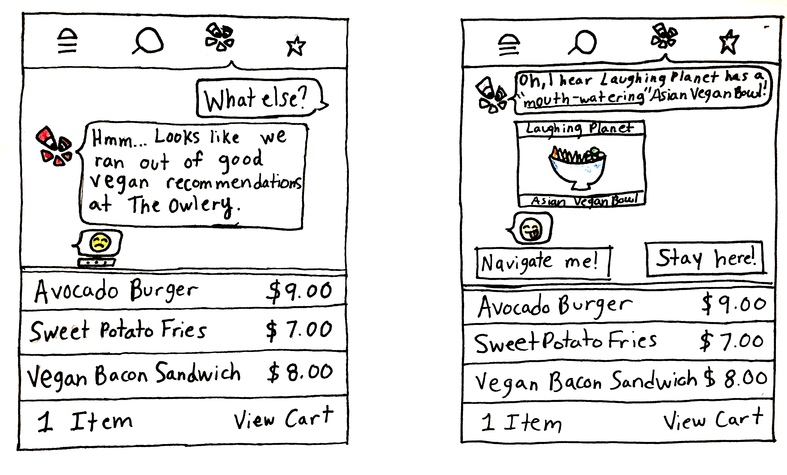

The Problem
Yelp’s current method of presenting reviews and ratings to the users is seemingly tedious and ineffective. Yelp is looking to invest in machine learning and Conversational UI to boost its business margin while providing their mobile user base a good experience in finding their choice of food.
Approach
User interviews, affinity diagramming, paper prototyping and usability testing.
My Role
I was the team facilitator. I moderated the workflow of the team and supervised the design process as a whole. Every team member shared an equal amount of work during every stage of the design process.
The Team
- Pavithra Ramamurthy
- Sean Smith
- Nicole Annicetti
- Vikas Jangam
Solution
The beginning...
The design prompt asked my team to explore alternatives to Yelp’s current method of providing ratings and reviews using conversational UI. Our goal would be to improve the experience of the user when they’re looking for something to eat on BTownMenus.com.
BTownMenus is a popularly used local delivery service in Bloominton, Indiana that links restaurants which particularly appeal to college students and late-night purchases and delivery.
Whom we spoke to...
We began by trying to understand how the users currently experienced BTownMenus and whether they found yelp’s review feature on BtownMenus application to be helpful.
Through our initial research we garnered that Indiana University’s graduate and undergraduate students made up a huge portion of BTownMenu’s
The inputs we acquired from the different interviews was immense and comprehensive. In order to make sense of all the data we had, we created detailed mind maps and visually represented them. This helped us view clear patterns of use cases within our research.

Based on our mind map we drew several
- Most of the users did not use Yelp reviews because they found Yelp tedious to use, or were not aware of its presence on the site.
- Users would be more likely to trust suggestions from other customers over the restaurant or business’ suggestions. Some users were skeptical about restaurant recommendations thinking they had some sort of business motive.
- Users care about quality. Seeing a review will give them a first-person perspective on the food experience of a restaurant.
- Current format of Yelp’s reviews on BTownMenus is inconspicuous, without form, and convoluted. Due to this the relevancy has dropped.
Our goal became very clear. We needed to make the Yelp reviews and ratings more relevant through conversational UI, and we would need do it in a transparent way.
Our primary user research provided us with a good insight about our target audience. We gained an understanding about their background, lifestyle, activities and behaviour. Based on our study, we came up with two personas Megan Boyle and Matt Wheeler who represented the full range of our target demographic.
What we did...
We took to the whiteboard and began by debating on different approaches to solving this issue through conversational UI.
We came up with ‘Yelpy’, our food expert who would provide popular reviews through a conversation, while passively studying user behaviour through machine learning and eventually providing better recommendations. He would have to be a non-intrusive bot to avoid overstepping on the user boundaries, while still being able to encourage people to have a conversation. Our main focus was to make sure that Yelpy behaves as an effective tool in helping users find and choose their food better, quicker, and more easily without any limitations.
The key factors we explored with our design were
- The conversation style in which Yelpy would interact with its users.
- Where, when and how Yelpy would be integrated into BTownMenus.
Based on our secondary research on effective incorporation of conversational UI as a tool we designed Yelpy with very specific capabilities.
We generated a variety of ideas for the conversation flow and explored the personality traits of our bot. We gave a specific focus to the language style that yelpy would use in order to enable the users to easily identify and connect comfortably with him. We used casual phrases like “Looks like bomb!,” “More pls!,” “What else?,” and emoticons like “bomb” and “smileys” as the mode of communication.
An important feature that we placed is the intended delay between each of Yelp’s responses. This again ties to the “human touch” aspect of the conversation.
We limited the number of Yelpy’s suggestions within each conversational phase in order to avoid overwhelming the users and to keep the interface clean.
Yelpy would only give recommendations from the current restaurant that a user is viewing at a time. For example, when the user is navigating in Arby’s restaurant page, the recommendations popping up will solely belong to the same restaurant. This is to avoid confusion and not surprise the user when the link redirects them to the second recommended restaurant's page.
When Yelpy runs out of popular recommendations at a restaurant for a particular food type then he would suggest popular choices from other restaurants. This would especially provide choices to people with a specific type of diet.
Yelpy would sense when users add food choices from multiple restaurants to their carts and provides a heads up in order to avoid confusion and frustration among users. We wanted to incorporate this into our design to account for Yelpy’s suggestion capabilities by keeping users aware of their actions.
All the conversations that Yelpy has can only be responded with clickable responses. We made this design choice based on the following factors that we validated through user testing and interviews.
- Our secondary research suggested that clickable texts are always more accessible than open ended text conversations
- Pre-determined options allow for faster response time, thus making the conversation more efficient
- Limited size of the mobile screen does not always invite easy texting
- We designed our interface such that the conversation can always be taken with a simple “yes”, “no” or “what else”
Integration of Yelpy into BTownMenus:
We wanted to emphasize the importance of informed reviews and efficiency by incorporating common messaging techniques. We relied on user recognised patterns to integrate Yelpy into BTownMenu’s existing application.
We changed the original layout of BtownMenus’ mobile app to bring more emphasise on Yelpy. We chose to redesign the top navigation bar to remove redundant features and utilize easily recognizable icons. When the user scrolls through restaurants, they will see a notification pop up next to Yelpy. If they click on Yelpy, a banner-like chat will appear to converse with the user. The user can then choose to engage in a conversation with Yelpy
Yelpy bot takes data from the plethora of Yelp restaurant reviews and presents them to users in a clear and concise text message. For example, saying “People are raving about ‘The Farm!’” If this restaurant interests the user, Yelpy will then suggests the most reviewed dishes from the restaurant. We wanted to provide the users with an accurate and condensed summary of the reviews on Yelp, through the ease of quick messages. Yelpy also uses machine learning techniques to remember user preferences and recommend better suggestions to the users (i.e. dietary restrictions).
How we validated Yelpy...
We created several low fidelity paper prototypes of Yelpy’s UI interactions, to test the usability of the design among different target users. We made instances of the conversation itself to test out the effectiveness of the language and communication with the users. We also created multiple conversations on index cards to account for a variety of possible scenarios for the user to interact with.
We scripted task based usability tests and used ‘think out loud’ method to test the experience of our design. I operated the interactive elements of the paper prototype while two of my teammates observed the test in progress and took notes. Another teammate video recorded the test. At the end of the test we asked the users several questions regarding their experience using the interface.


Search Case
We also created low fidelity prototypes to test out special use cases like when a user searches for specific food types like vegan options, gluten free food, a specific dish, etc. When BtownMenus doesn’t recognize search options, Yelpy recognizes the term and opens a speech bubble with a question about the item that is searched for (eg: vegan) and makes a suggestion based on its reviews and ratings. This would be the only time that Yelpy would automatically pop up suggestions when it is not directly engaged by the users.
We conducted
The Team

What I Learnt
- All the information you would need in order to completely understand a platform can be gained through its users.
- There are several approaches and directions that we could take to potentially solve a problem, but the key is to recognize the one idea that has the most potential.
- It takes great team work and an open mind to testing out ideas iteratively to successfully design an ideal solution.
- Designing a conversational interface could easily become complex unless you are ready to embrace the constraints and focus on that one main problem that you need your design to solve in the simplest possible way.